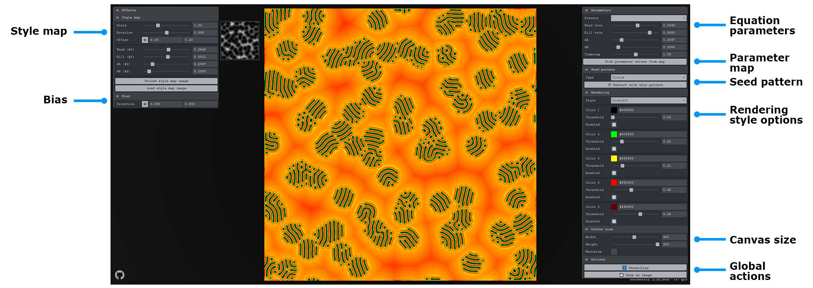
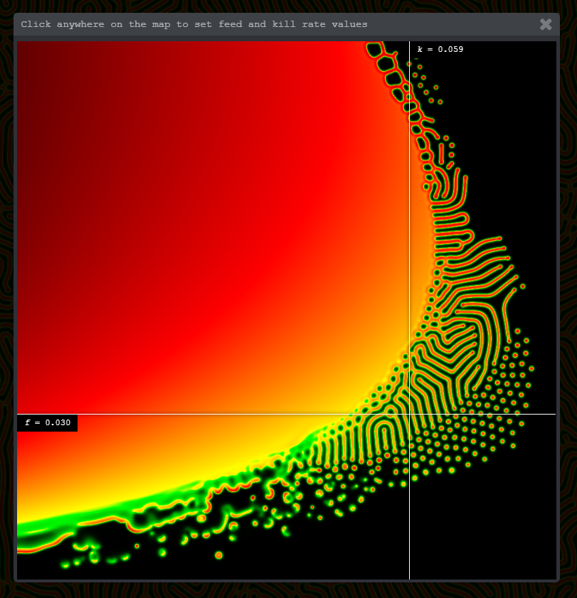

Reaction-Diffusion Playground
Reaction-diffusion is a mathematical model describing how two chemicals might react to each other as they diffuse through a medium together. It was proposed by Alan Turing in 1952 as a possible explanation for how the interesting patterns of stripes and spots that are seen on the skin/fur of animals like giraffes and leopards form. Learn more about reaction-diffusion below.
When run at large scales and high speeds, reaction-diffusion simulations can produce an amazing variety of dynamic, mesmerizing patterns and behaviors, as shown in the screenshots below. In the time since Turing published his original paper on the topic, reaction-diffusion has been studied extensively by researchers in biology, chemistry, physics, computer science, and other fields. Today it has become accepted as a plausible (some say proven) explanation for the formation of patterns such as zebrafish pigmentation, hair follicle spacing, the Belousov-Zhabotinsky (BZ) chemical reaction, certain types of coral, zebra and tiger stripes, and more.
Using the app
Style map
Upload an image from your computer to vary the f, k, dA, and dB values based on the brightness value of each pixel. The secondary values you choose here will become endstops in an interpolation calculation with the primary values (on the right UI pane). In other words, the four equation parameters will be interpolated to be between the original parameter values (on the right pane) and these secondary parameter values (left pane) using the brightness value of each pixel.
In addition to the reaction-diffusion equation parameters, you can also adjust the uniform scale, rotation, and X/Y offset of the image for different effects.
Your image will automatically be scaled to fit the entire canvas, so it may be stretched. Resize your image to match the width and height of the canvas (or at least its aspect ratio) to minimize distortion.
The following images make for good style maps, and are included in the source repository:


{kind=link}
{kind=link}
{kind=link}
{kind=link}
{kind=link}
{kind=link}
{kind=link}
{kind=link}
{kind=link}
{kind=link}
{kind=link}
{kind=link}
{kind=link}
{kind=link}
{kind=link}
{kind=link}
{kind=link}
Bias
Normally diffusion occurs evenly in all directions due to the default radially symmetrical Laplacian stencil. Using this X/Y pad you can "weight" this stencil to cause diffusion to favor one particular direction.
Equation parameters
Each of the four fundamental parameters of the reaction-diffusion equation (f, k, dA, dB), along with the timestep increment, can be changed using the sliders found at the top of the right panel. Change them gradually to avoid collapsing the system.
Interactive parameter map
Use this map to navigate through the parameter space easily and find areas with interesting patterns and behaviors. k values are plotted along the X axis, f values along the Y axis.
{kind=link}
Use the crosshairs attached to the mouse position to navigate to a region you're interested in, then click to set the main f and k values to match where you clicked.
This map is inspired by the work of Robert Munafo.
Seed pattern
Choose a pattern to use in the first frame of the simulation to seed the reaction. Each pattern has some additional options you can play with for different effects.
- Circle - radius.
- Square - width, height, scale, and rotation.
- Text - string, size, rotation.
- Image - upload an image from your computer, fit, scale, rotation.
Also provides buttons to reset the simulation with the selected pattern or clear the canvas completely.
Rendering style
Control how the chemical concentration data is translated into visuals.
Canvas size
Set the width and height of the simulation area.
You can also maximize the canvas to fit the entire viewport.
Global actions
Buttons to pause/play or export an image of the current state of the simulation area.
Keyboard controls
Space= pause/play.r= reset using the currently-selected seed pattern.s= save an image of the current canvas content.u= show/hide the UI.
Mouse controls
Click and drag anywhere on the canvas to increase the concentration of the B chemical around the mouse position.
Use your mouse wheel to change the diameter of the area affected by clicking / dragging. The size of the brush is indicated with a circle that follows the mouse.
MIDI controls
If you have an Akai LPD8 Wireless or a Novation Launch Control XL, mappings are provided for the various pads and knobs. See ./js/midi.js for details.
What is reaction-diffusion?
Reaction-diffusion is a mathematical model describing how two chemicals might react to each other as they diffuse through a medium together. It was proposed by Alan Turing in 1952 as a possible explanation for how the interesting patterns of stripes and spots that are seen on the skin/fur of animals like giraffes and leopards form.
The reaction-diffusion equations really only describes how the concentrations of the chemicals change over time, which means that all of the interesting patterns and behaviors that we see are emergent phenomena.
Here's what the equations look like:
Credit to Karl Sims for the equation illustration above.
The most important terms, the ones we'll want to turn into tweakable parameters, are:
f- feed rate. Determines how much of chemical A is added to the system in each iteration.k- kill rate. Determines how much of chemical B is removed from the system in each iteration.dA- diffusion rate for chemical A. Determines how much chemical A spreads to neighboring cells each iteration.dB- diffusion rate for chemical B. Determines how much of chemical B spreads to neighboring cells each iteration.
The other terms in the equation are usually kept constant, but might be worth playing around with once you are comfortable with the core parameters:
∇2- the Laplacian operator. Essentially a single value that represents the chemical concentration of the neighbors to the current cell.AB2- reaction rate. Note that it is subtracted in the equation for chemical A and added in the equation for chemical B. This is how the chemical reaction converting chemical A into chemical B is modelled.Δt- timestep. Using1.0here means it runs at "normal" speed. Smaller values are like slow motion, and larger values make it run faster. Large values can cause the system to collapse.
How does this work?
Most reaction-diffusion simulations store values representing the concentrations of the two chemicals (A and B) in a 2D grid format, then applies the reaction-diffusion equations to each cell in the grid. In this simulation, data textures matching the size of the screen (canvas) are used for the 2D grid, and custom shaders are used to apply the reaction-diffusion equations to each pixel (texel) of these textures.
Each pixel/texel of the simulation data texture encodes the A and B concentrations for that location in the R and G channels as a normalized float value ([0.0-1.0]).
In each frame of the simulation, a custom fragment shader (./glsl/simulationFrag.glsl) reads the values of the last frame's data texture as an input and applies the reaction-diffusion equation to every pixel. Data textures are rendered back and forth between two render targets many times per frame with a technique called ping-pong to speed things up.
Once the simulation has been run enough times, another fragment shader (./glsl/displayFrag.glsl) reads the latest data texture and maps the chemical concentration data to color values (configurable in the UI).
Just about every option you see in the UI controls one or more uniforms that get passed to these fragment shaders to influence the reaction-diffusion equations or the way the data texture information is translated into colors.
See the source code on GithubReferences
Fundamentals
These papers, articles, and videos helped me understand how the reaction-diffusion algorithm works.
- The Chemical Basis of Morphogenesis (PDF) paper by Alan Turing (1952)
- Reaction-Diffusion Tutorial by Karl Sims
- Reaction-Diffusion by the Gray-Scott Model: Pearson's Parametrization by Robert Munafo (mrob)
- Reaction Diffusion: A Visual Explanation by Arsiliath
- Coding Challenge #13: Reaction Diffusion Algorithm in p5.js by Daniel Shiffman (Github repo with both p5.js and Processing source code)
Code
These articles, repos, and project pages helped me figure out how to build my implementation.
- Gray-Scott - JavaScript experiments by @pmneila
- Processing: Reaction Diffusion Halftone patterns by Ignazio Lucenti
- Reaction Diffusion (JavaScript + WebGL) by Red Blob Games
- Reaction Diffusion by Ken Voskuil (look in the DOM)
- Reaction-Diffusion Simulation in Three.js (JavaScript + ThreeJS) by Jonathan Cole
Creative
These projects inspired me to explore some of the creative possibilities of reaction-diffusion.
- 3D Printed Reaction Diffusion Patterns Instructable by Reza Ali
- Silhouect by Justin Gitlin (@cacheflowe)
- Coral Cup by Nervous System
- Reaction Lamps by Nervous System
- Reaction Table by Nervous System
- Reaction shelf by Nervous System